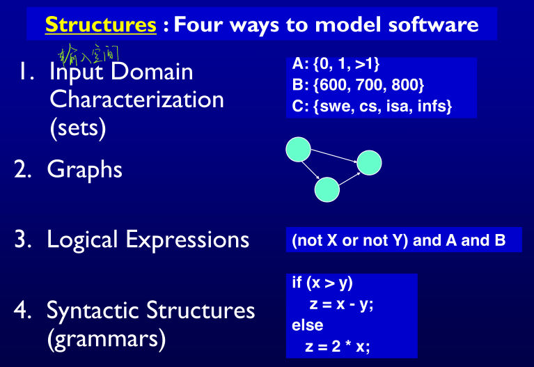
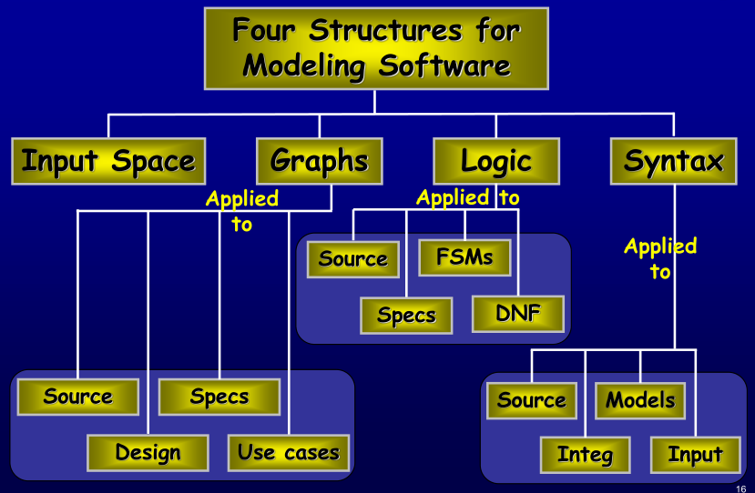

智能软件测试｜Criteria-Based Test Design
基于标准的测试设计
Criteria-Based Test Design
新旧测试观念
-
旧的观点把重点放在每个 软件开发 阶段的测试上，因为它与其他阶段非常不同
- 模块，集成，系统
-
新的测试观念侧重于 结构(structures) 和 标准(criteria)
- 输入空间、图形、逻辑表达式、语法
 - 每个阶段的测试设计基本相同
- 创建 模型 是不同的
- 选择值 和 自动化测试 是不同的
- 输入空间、图形、逻辑表达式、语法
-
基于结构的标准的结构来源：这些结构可以从大量软件工件中
提取- 图(Garphs) 可以从UML用例、有限状态机和源代码中提取
- 逻辑表达式(Logical expressions) 可以从程序源代码中的决策、转换保护、用例中的条件等中提取…
- 基于结构的测试标准和
“基于模型的测试”不同，后者从描述被测系统某些方面的模型派生测试模型通常描述行为的一部分源代码不作为考量的部分

测试覆盖标准（Test Coverage Criteria）
测试人员的工作很简单：定义软件的模型，然后找到覆盖它的方法
- 测试需求(Test Requirements) ：测试需求是软件工件的一个特定元素，测试用例必须满足或覆盖这个特定元素（提炼通用部分）
- 覆盖标准(Coverage Criterion) ：一个覆盖标准是一条规则，或者是将测试需求施加在一个测试集上的一组规则
- 覆盖标准以一种全面并且精确的方式描述了测试需求
- 覆盖(Coverage) ：给定一个覆盖标准 C 和相关的测试需求集合 TR，要使一个测试集合 T 满足 C，当且仅当对于测试需求集合 TR 中的每一条测试需求 tr，在 T 中至少存在一个测试 t 可以满足 tr
- 覆盖程度(Coverage Level) ：给定一个测试需求集合 TR 和一个测试集合 T，覆盖程度就是 T 满足的测试需求数占 TR 总数的比例
- 不可行(Infeasible)的测试要求 ：无法满足的测试要求
- 不存在满足测试要求的测试用例值
- 例如：死代码(Dead code)
- 对于大多数覆盖标准来说，检测不可行测试需求形式上是
不可判定的 - 因此 100%的覆盖率在实际中是不存在的
- 使用测试标准的两种方法
直接生成满足标准的测试值- 通常由研究界承担
- 使用标准的最明显方式
- 没有自动化工具很难
外部地生成测试用例值（例如手动或使用伪随机工具），然后根据覆盖标准来度量测试- 通常受到工业界的青睐
- 有时存在误差
- 生成器和识别器
- 生成器(Generator) ：一个程序可以自动生成满足标准的值
- 识别器(Recognizer) ：一个判定给定测试用例值集合是否满足标准的程序
- 对于大多数标准来说，这两个问题都是
不可证明的 - 与生成满足标准的测试相比，识别测试用例是否满足标准的可能性要高得多
- 标准包含(Criteria Subsumption) ：覆盖标准 C1 包含 C2，当且仅当满足 C1 的每一个测试集合都满足 C2
对于
每一组测试用例都必须为真
-
例如：如果一个测试集覆盖了程序中的
每个分支（满足分支标准），那么该测试集就保证也覆盖了每个语句 -
不可行与包含
- 当且仅当所有的测试需求都是可行的，有时标准 C1 包含另一个标准 C2
- 如果 C1 的某些测试需求是不可行的，C1 将不包含 C2
好的覆盖标准的特征
-
自动计算测试需求应该相当容易
-
生成测试值应该是有效的
-
由此产生的测试应尽可能多地揭示故障
包含只是故障揭示能力的
粗略近似值
基于准则的测试设计的优势
-
标准最大限度地提高了“
成本效益”更少的测试更有效地发现故障
-
具有
最小重叠的综合测试集 -
从软件工件到测试的
可追溯性- 来源、需求、设计模型…
- 回答每个测试的“为什么”
- 对回归测试的内置支持
-
测试的“
停止规则”可以提前知道需要进行多少次测试- 有利于自动操作
- 可以通过强大的工具得到很好的支持
概述总结
- 我们为什么要进行测试：以
降低使用软件的风险- 目标：尽早消除故障（提高质量、降低成本、保持客户满意度）
- Faults, failures, the RIPR model
- 测试过程成熟度级别 —— 4级是一种提高软件质量的心理训练
- 测试活动
- V模型、多V模型
- 模型驱动的测试设计：四种类型的
测试活动——测试设计、自动化、执行和评估
- 术语
- Validation, Verification; Testing, debugging;
- Testability, observability and controllability, test automation frameworks
- Criteria-based test design:
Four structures– testrequirementsandcriteria
本博客所有文章除特别声明外，均采用 CC BY-SA 4.0 协议 ，转载请注明出处！